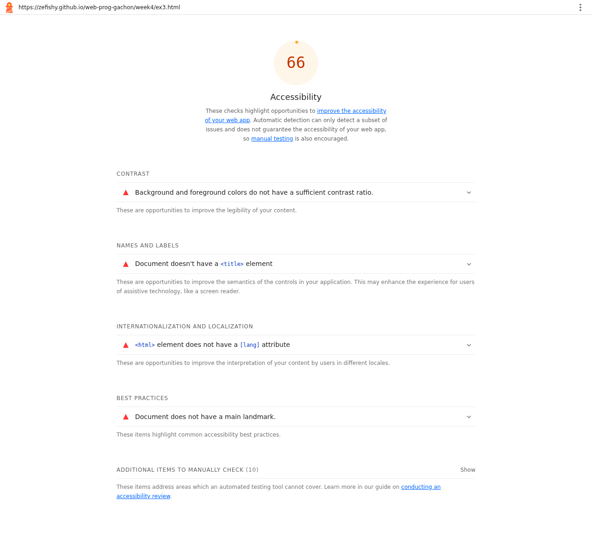
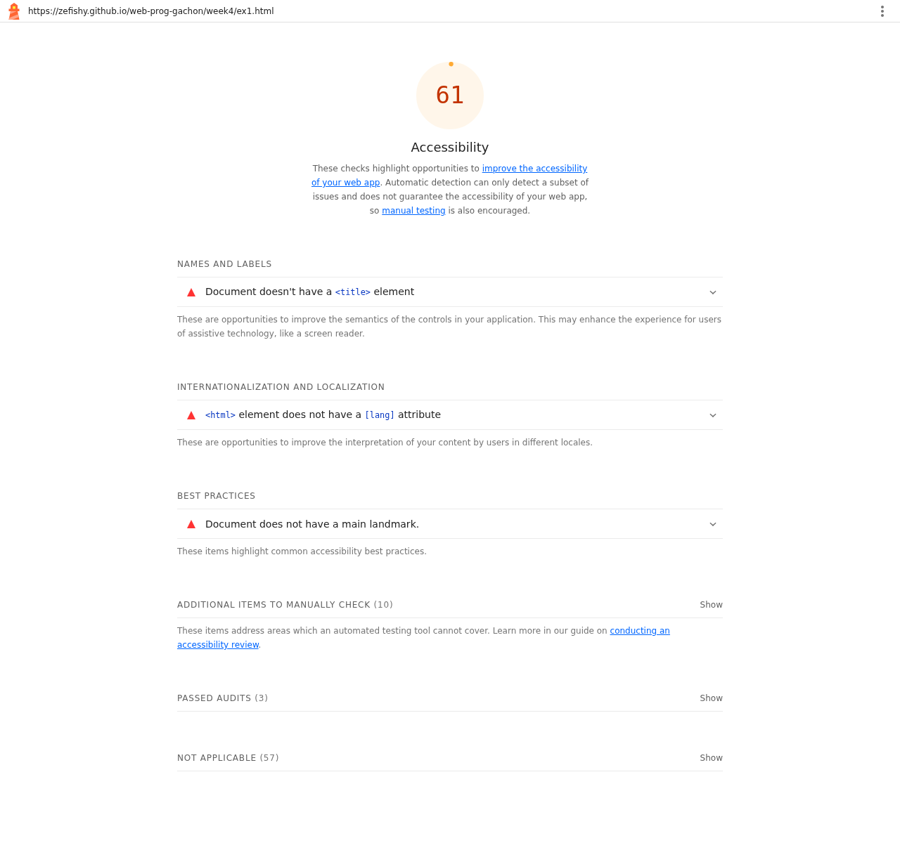
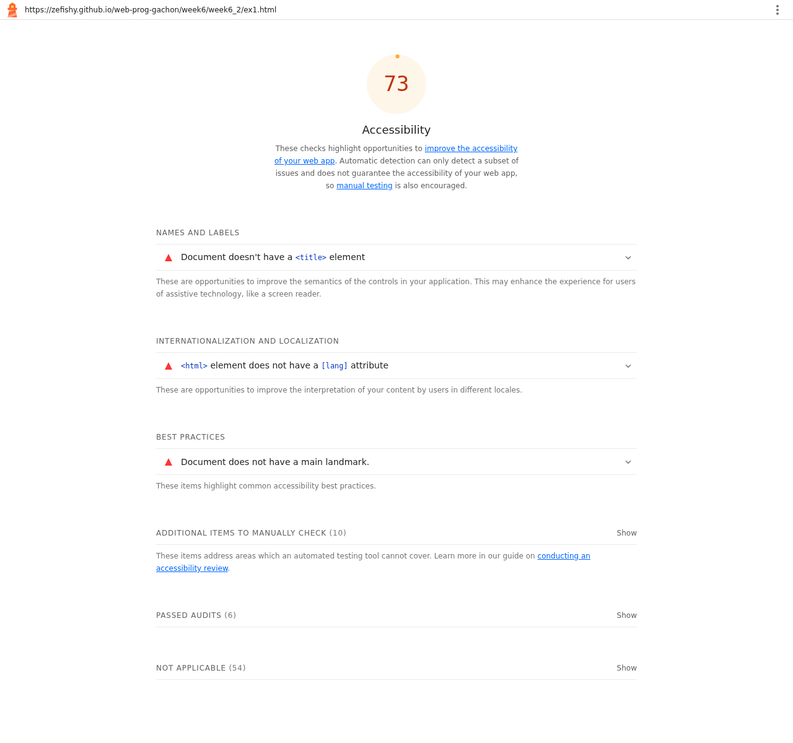
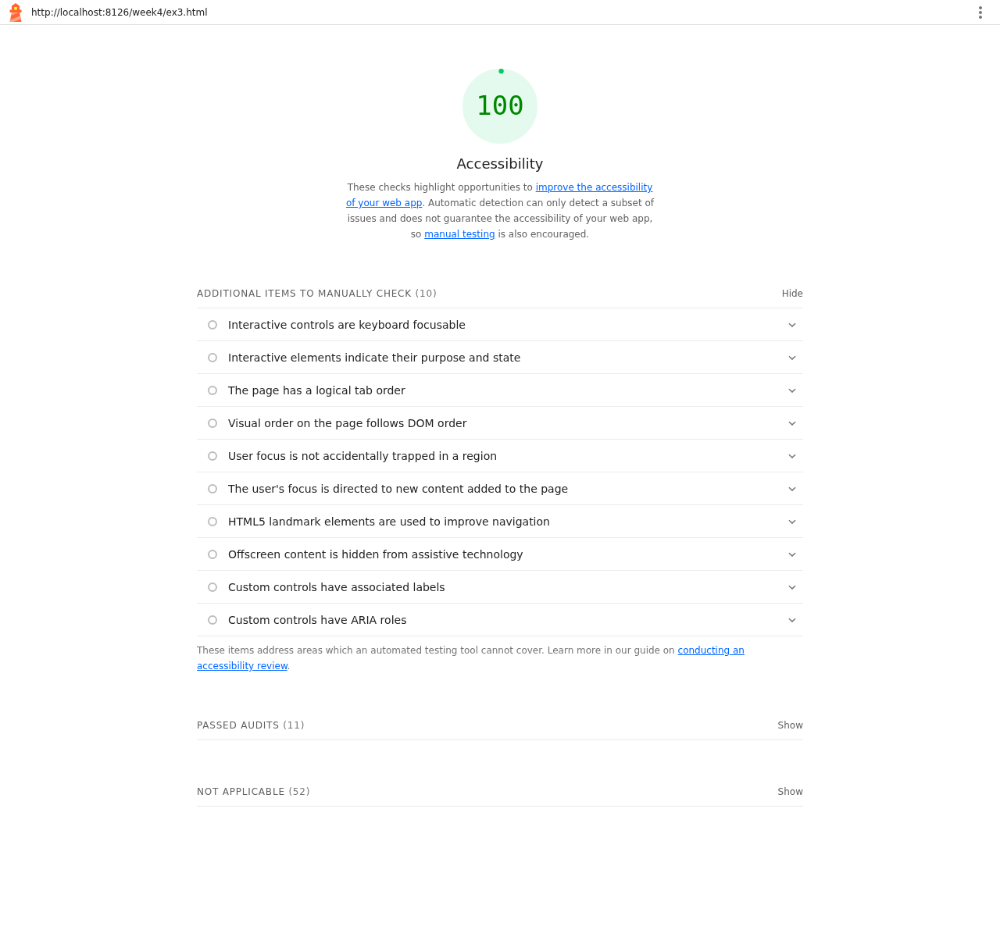
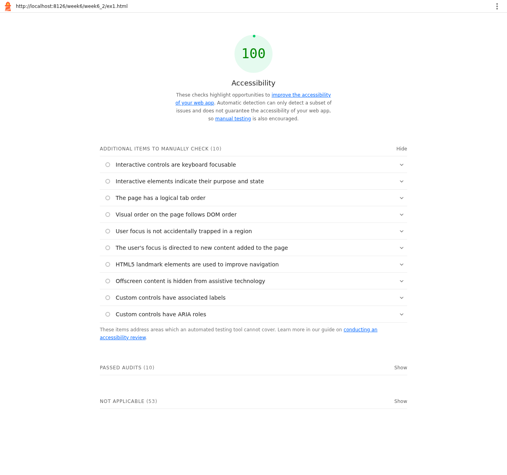

Lighthouse Accessibility Report
For this week's homework I ran Lighthouse's accessibility audit across my project site. The homepage already scored 100, so I audited the exercise pages it links to as well — and that is where the real failures were hiding: three pages scored between 61 and 73. I fixed every failing audit I found, re-ran Lighthouse, and every audited page now scores 100.
before,66 after,100
before,61 after,100
before,73 after,100
How the audit was run
I ran Lighthouse 13.6.0 with only the Accessibility category enabled. The first pass audited the deployed site on GitHub Pages, including the homepage and the exercise pages it links to. That pass produced the initial scores and the list of failing audits. After applying the fixes, I re-ran the exact same audit against the fixed copy of the site and screenshotted both reports.
Auditing the whole site — not just the homepage —
mattered: index.html scored 100 on its own, but the
three exercise pages below failed a total of ten audit checks.
Initial scores and failing audits
The table shows every audited page, its initial accessibility score, and the audits it failed. The to-do list page failed the most, so it is the page I tracked through the whole before/after cycle.
| Page | Initial score | Failing audits |
|---|---|---|
| index.html Homepage | 100 |
|
| week4/ex1.html Click Counter | 61 |
|
| week4/ex3.html To-Do List | 66 |
|
| week6/week6_2/ex1.html Sign-in form | 73 |
|

week4/ex3.html (the Week 4
to-do list): 66, with four failing audits listed — this
is the page the rest of this report follows.

week4/ex1.html (click counter): 61 on the
initial run.

week6/week6_2/ex1.html (sign-in form): 73 on the
initial run.
index.html (homepage): already 100 — its
one failing audit was hidden with weight 0, so it never
showed in the report or affected the score.
What the failing audits mean
<html> element does not have a [lang] attribute
Without lang="en", screen readers cannot pick
the right pronunciation rules, so every word is guessed at.
Document doesn't have a <title> element
The page has no name, so browser tabs, bookmarks, history, and screen readers all announce it as an empty document.
Document does not have a main landmark
Screen-reader users jump between landmarks, and with no
<main> there is no way to skip straight to
the content of the page.
Background and foreground colors do not have a sufficient contrast ratio
The "No tasks yet!" message used #9ca3af gray on
white — a contrast ratio of just 2.54:1, far below the
4.5:1 minimum, making it hard to read for users with low
vision.
Elements with visible text labels do not have matching accessible names
The four bookshelf links on the homepage carried
aria-labels whose wording ("Week 2: HTML, 16
pages") did not include their visible text, so
speech-input users saying the visible label could not
activate the link.
The fixes
The homework asks for at least three failing audits to be fixed; I fixed all five, so the re-run is clean everywhere.
Declare the page language
Added lang="en" (and a
<meta charset>) to all three exercise
pages, so assistive technology announces them in English.
Give every page a title
Added descriptive <title> elements:
"Click Counter", "My To-Do List", and "Sign In". Tabs,
bookmarks, and screen readers can now name each page.
Mark the main landmark
Wrapped each page's content in a single
<main> element, giving keyboard and
screen-reader users a landmark to jump to.
Darken the low-contrast text
Changed the empty-list message from #9ca3af to #6b7280, lifting its contrast on white from 2.54:1 to 4.83:1 — past the 4.5:1 AA minimum.
Let visible text name the links
Removed the four redundant aria-labels on the
homepage bookshelf links, so the accessible name comes from
the visible text inside each spine.
Re-run: everything at 100
After the fixes, the same audit was run again. Every audited page now scores 100, and the to-do list page — the worst offender at 66 — passes all checks with a fully clean report.

week4/ex3.html: 100, no failing
audits. You can open the
fixed to-do list and try it.

What's left
The homework is complete, but the audit surfaced a few things worth fixing in future passes:
-
Most Week 2 and Week 3 topic pages still fail
landmark-one-mainbecause their content is not wrapped in a<main>element. -
week2/week2_2/ex5.htmlfailstarget-size: its link tap targets are smaller than the 24×24 CSS pixel minimum. -
week3/week3_2/ex3.html(a loading-spinner demo) trips a Lighthouse quirk and reports NO_FCP instead of a score; it needs a manual check. - This report page was audited with the same Lighthouse run: it scores 100 too.